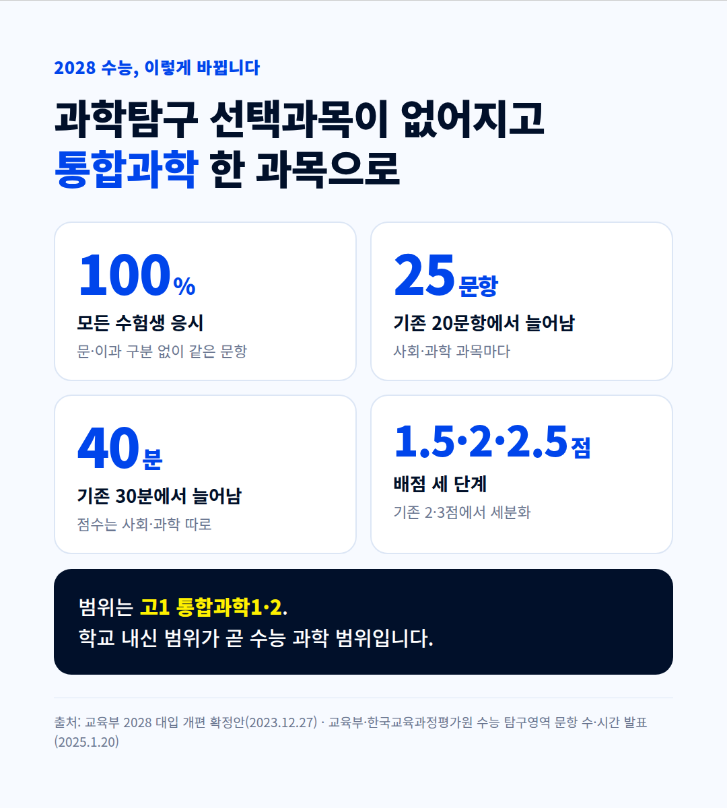
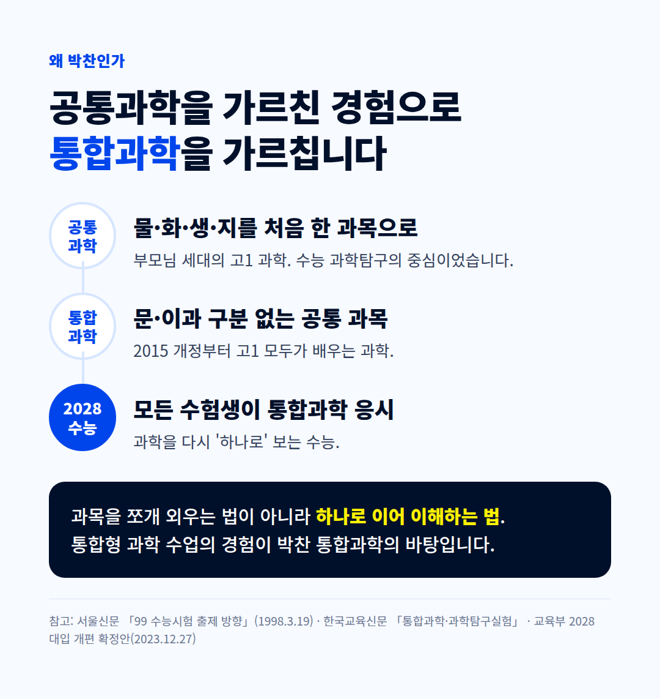
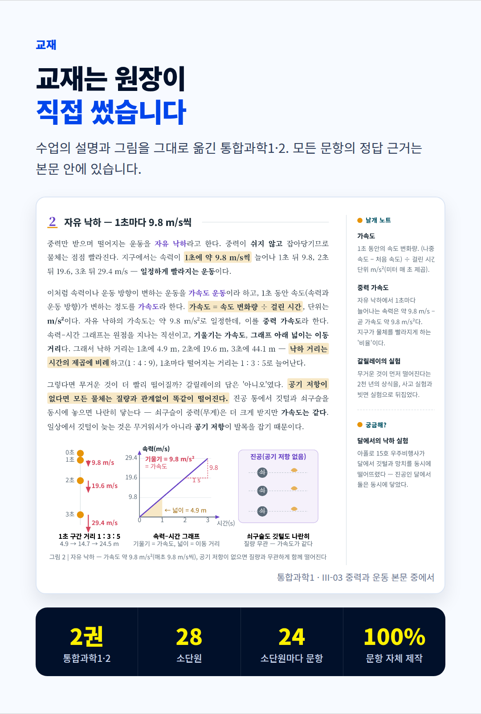
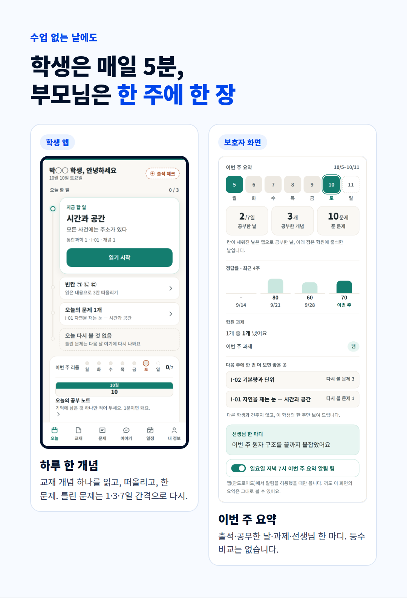

2028 수능 과학은 통합과학 한 과목 | 박찬 통합과학 학원 · 원장 직강
박찬 통합과학 학원 · 블로그 1호(짧은 판) · 사진 6장
학부모님, 안녕하세요. 박찬 통합과학 학원입니다.
2028학년도 수능부터 과학탐구는 선택과목 없이 통합과학 한 과목입니다. 물리·화학·생명과학·지구과학 가운데 골라 보던 시험이, 모든 수험생이 같은 문항을 푸는 시험으로 바뀝니다.

범위는 고1 때 배우는 통합과학1·2입니다. 학교 내신 범위가 곧 수능 과학 범위라는 뜻입니다.
과학을 하나로 가르쳐 본 경험
부모님이 고1 때 배우신 '공통과학', 기억하시나요? 물리·화학·생물·지구과학을 처음으로 한 과목에 묶은 과목이었고, 당시 수능 과학탐구의 중심이었습니다.
박찬 통합과학의 원장은 그 공통과학을 가르쳤습니다. 과목을 쪼개 외우게 하지 않고, 하나로 이어 이해하게 하는 수업 — 통합과학에 꼭 필요한 바로 그 수업입니다.

교재도 원장이 직접 썼습니다

수업의 설명과 그림을 그대로 옮긴 『통합과학 1·2』입니다. 두 권, 28개 소단원, 소단원마다 24문항. 모든 문항의 정답 근거는 본문 안에 있습니다.
수업 없는 날에도 이어집니다

- 학생은 매일 5분 — 앱에서 교재 개념 하나를 읽고, 빈칸을 떠올리고, 한 문제. 틀린 문제는 간격을 두고 다시 나옵니다.
- 부모님은 한 주에 한 장 — 출석, 공부한 날, 과제, 선생님 한 마디. 등수 비교는 없습니다.
개설 강좌 · 원장 직강
- 중등부 · 고1 예비반 · 고1 내신반 · 고3 수능반
- 위치: 【확인 필요 — 주소】 5층
- 상담: 【확인 필요 — 지역번호】 213-3577
- 학원 등록 제2019-115호 · 교습비 중등부 21만 원 · 26만 7,000원 / 고등부 22만 원 · 31만 7,000원
학습 앱은 가입 없이 최근 7일치를 둘러볼 수 있습니다.
https://usualhealth383-cloud.github.io/autoblog/parkchan/
참고: 교육부 2028 대입 개편 확정안(2023.12.27) · 교육부·한국교육과정평가원 수능 탐구영역 문항 수·시간 발표(2025.1.20) · 서울신문 「99 수능시험 출제 방향」(1998.3.19)